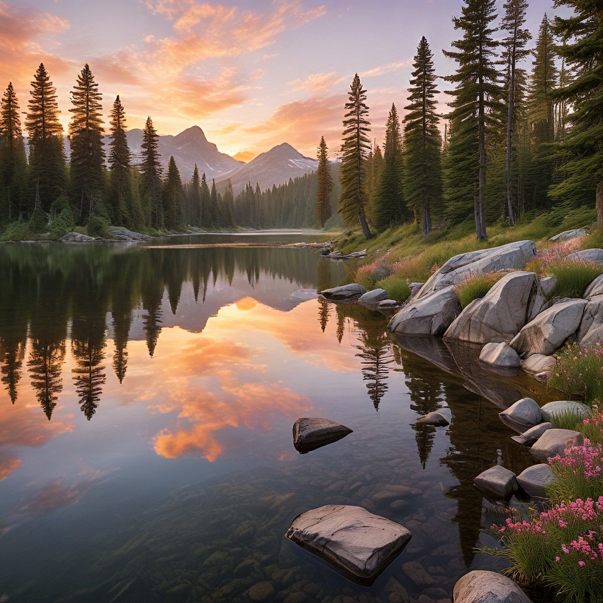
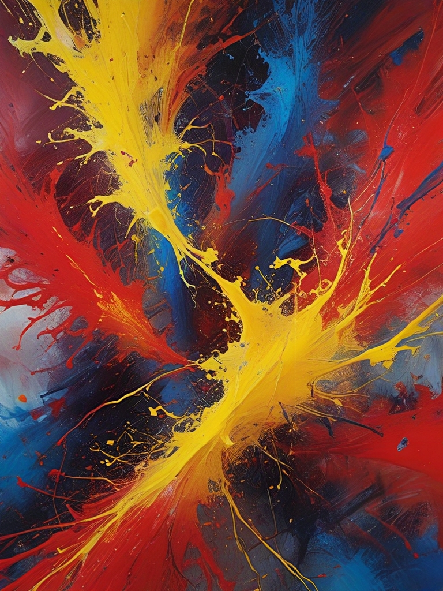
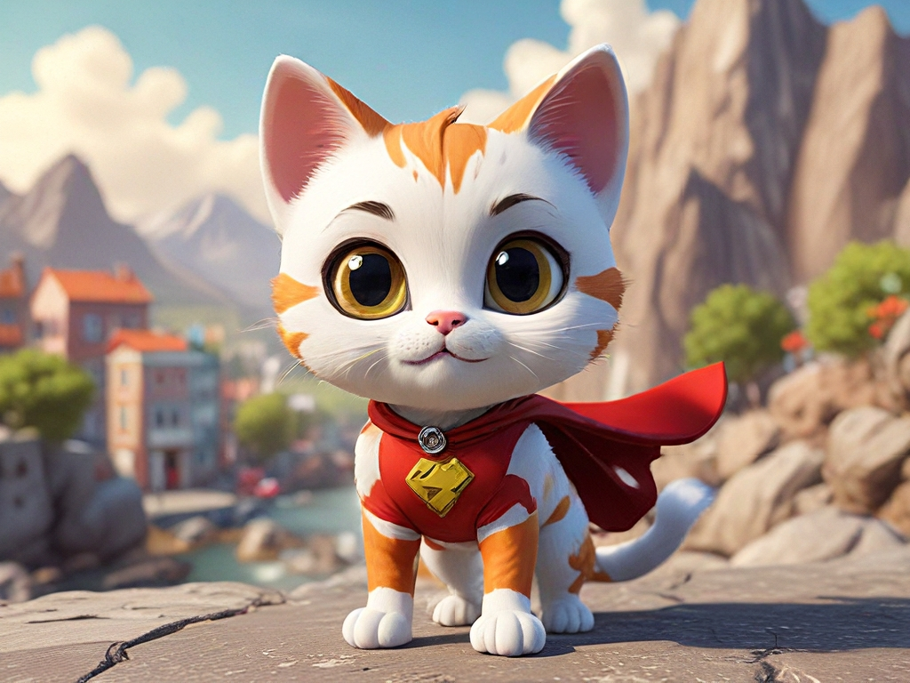

Dicas de Geração de Imagens
Criar imagens com AiCasso é fácil e divertido! Você não precisa se preocupar em ser super preciso ou garantir que sua gramática esteja perfeita. Basta descrever o que você tem em mente, e o AiCasso fará o resto. Se você está procurando um estilo específico, quer uma paisagem, retrato ou uma imagem quadrada, o AiCasso é inteligente o suficiente para entender o que você deseja, mesmo que você cometa erros gramaticais ou não siga as instruções exatamente.
Exemplos:
Prompt: "Faça um lago tranquilo com montanhas ao pôr do sol, como aquelas pinturas antigas elegantes, imagem quadrada, sem animais ou barcos."

Resultado: O AiCasso gerará um lindo lago de montanha ao pôr do sol, inspirado no estilo Barroco, sem animais ou barcos, e estará em formato quadrado.
Prompt: "Explosão louca de cores brilhantes, como arte abstrata, tamanho retrato, sem formas ou objetos."

Resultado: A IA criará uma explosão abstrata de cores vibrantes sem formas reconhecíveis, seguindo o estilo do Expressionismo Abstrato, e estará em um layout retrato.
Prompt: "Gato de desenho animado divertido como um super-herói, estilo 3D, paisagem, certifique-se de que seja fofo, não assustador."

Resultado: Isso criará um adorável gato de desenho animado 3D vestido como um super-herói, com uma vibe brincalhona e não assustadora, exibido em formato paisagem.
Estilos de Aprimoramento
Não tem certeza de qual estilo escolher? Não se preocupe! Basta mencionar qualquer estilo que venha à mente, mesmo que não esteja gramaticalmente correto, e o AiCasso descobrirá a partir da lista de Estilos de Aprimoramento disponíveis.
- Padrão: Um estilo equilibrado e neutro sem nenhuma influência artística específica.
- Aprimorar: Melhora ligeiramente os detalhes e a estética geral.
- Diva Cinemática: Adiciona um efeito dramático, semelhante a filmes, com fortes contrastes de iluminação.
- Expressionismo Abstrato: Enfatiza formas abstratas e explosões de cores vibrantes.
- Academia: Adiciona um toque acadêmico e clássico à imagem.
- Figura de Ação: Gera imagens com o estilo exagerado e dinâmico das figuras de ação.
- Personagem 3D Adorável: Produz personagens 3D fofos e de estilo cartoon.
- Kawaii Adorável: Enfatiza o estilo fofo e encantador típico da cultura Kawaii.
- Art Deco: Usa o estilo geométrico e decorativo do período Art Deco.
- Art Nouveau: Adiciona linhas fluidas e elementos inspirados na natureza, típicos do Art Nouveau.
- Aura Astral: Cria uma atmosfera mística e de outro mundo.
- Vanguarda: Foca em expressões artísticas inovadoras e experimentais.
- Barroco: Usa o estilo dramático, detalhado e elaborado da era Barroca.
- Pôster Estilo Bauhaus: Reflete os princípios de design minimalista e funcional da Bauhaus.
- Desenho Esquemático Blueprint: Produz imagens que se assemelham a plantas técnicas.
- Caricatura: Gera retratos exagerados e de estilo cartoon.
- Arte com Sombreamento Cel: Usa as cores planas e ousadas típicas da animação com sombreamento cel.
- Folha de Design de Personagem: Foca em designs de personagens limpos e claros adequados para animação.
- Arte Clássica: Emula o estilo de arte refinado e idealizado da Antiguidade Clássica.
- Pintura de Campo de Cor: Apresenta grandes áreas de uma única cor para criar um plano de cor plano.
- Arte com Lápis de Cor: Imita a textura e a aparência de desenhos a lápis de cor.
- Arte Conceitual: Prioriza ideias e conceitos sobre preocupações estéticas ou materiais.
- Construtivismo: Reflete o estilo industrial e geométrico do movimento construtivista.
- Cubismo: Decompõe objetos em formas geométricas e os apresenta em formas abstratas.
- Dadaísmo: Enfatiza a absurdidade, a irracionalidade e a estética antiarte.
- Fantasia Sombria: Cria uma atmosfera sombria e gótica com elementos escuros e sinistros.
- Atmosfera Sombria e Melancólica: Usa iluminação baixa e sombras para criar uma ambiência melancólica.
- Arte DMT: Apresenta visuais vibrantes e psicodélicos inspirados em experiências com DMT.
- Arte de Doodle: Enfatiza estilos de desenho lúdicos e caprichosos, muitas vezes intrincados e detalhados.
- Dupla Exposição: Combina duas imagens em uma, criando um efeito surreal e em camadas.
- Pintura com Tinta Gotejante: Usa tinta respingada e gotejante para criar composições dinâmicas e caóticas.
- Expressionismo: Prioriza a expressão emocional sobre a representação realista, muitas vezes usando cores ousadas e formas dramáticas.
- Foto Polaroid Desbotada: Imita a aparência envelhecida e nostálgica de uma fotografia Polaroid desbotada.
- Fauvismo: Usa cores vibrantes e não naturais e pinceladas ousadas, inspirado pelo movimento fauvista.
- 2D Plano: Enfatiza designs simples e planos com sombreamento ou profundidade mínima, muitas vezes em estilo cartoon.
- Estilo Fortnite: Reflete o estilo artístico vibrante e de desenho animado típico do jogo Fortnite.
- Futurismo: Foca em movimento dinâmico, energia e a representação de tecnologias futuras.
- Glitchcore: Enfatiza erros digitais e glitches como um estilo artístico, muitas vezes com visuais distorcidos.
- Glo-Fi: Usa iluminação suave e brilhante para criar uma atmosfera onírica e etérea.
- Estilo Googie: Reflete as tendências de design futurista e da Era Espacial da metade do século XX.
- Arte de Graffiti: Usa a estética vibrante e de estilo de rua típica do graffiti e murais urbanos.
- Arte do Renascimento de Harlem: Reflete as ricas expressões culturais e artísticas do Renascimento de Harlem.
- Alta Moda: Enfatiza a estética elegante, sofisticada e vanguardista da alta moda.
- Idílico: Cria uma atmosfera pacífica, serena e muitas vezes pastoral.
- Impressionismo: Usa pinceladas soltas e cores vibrantes para capturar os efeitos da luz e da atmosfera.
- Desenho Infográfico: Enfatiza layouts claros e visualmente atraentes para apresentar informações graficamente.
- Desenho com Tinta Gotejante: Usa tinta para criar efeitos fluidos e gotejantes em um desenho.
- Desenho com Tinta Japonesa: Emula as técnicas de pincel tradicionais e a estética da arte da tinta japonesa.
- Fotografia Knolling: Enfatiza a arrumação limpa e organizada de objetos, muitas vezes fotografados de cima.
- Atmosfera Alegre e Brilhante: Usa cores e iluminação brilhantes para criar uma atmosfera alegre e edificante.
- Design de Logotipo: Foca na criação de logotipos e elementos de branding limpos e reconhecíveis.
- Elegância Luxuosa: Enfatiza sofisticação e luxo, muitas vezes com texturas e materiais ricos.
- Fotografia Macro: Foca em close-ups extremos, muitas vezes revelando detalhes intrincados não visíveis a olho nu.
- Arte Mandala: Cria padrões intrincados e simétricos inspirados em designs de mandala tradicionais.
- Desenho com Marcador: Emula as linhas e cores ousadas e vibrantes típicas de desenhos com marcador.
- Medievalismo: Reflete a estética da arte e design do período Medieval.
- Minimalismo: Enfatiza a simplicidade e a redução das formas aos seus elementos essenciais.
- Neo-Barroco: Revive o estilo opulento e dramático do período Barroco, com influências modernas.
- Neo-Bizantino: Combina o estilo de arte religiosa ornamentada do Império Bizantino com elementos contemporâneos.
- Neo-Futurismo: Foca em designs futuristas, muitas vezes com estéticas elegantes e de alta tecnologia.
- Neo-Impressionismo: Usa pequenos pontos distintos de cor para criar imagens, inspirado pelo movimento Neo-Impressionista.
- Neo-Rococó: Revive o estilo decorativo e elaborado do período Rococó, com reviravoltas modernas.
- Neoclassicismo: Emula a estética da arte e design da Antiguidade Clássica, enfatizando harmonia e simplicidade.
- Arte Óptica: Cria ilusões e efeitos ópticos através do uso de padrões geométricos e contrastes.
- Ornado e Intricado: Foca em designs altamente detalhados e elaborados com foco na decoração.
- Desenho a Lápis: Emula a textura e a aparência de esboços a lápis.
- Pop Art: Usa cores ousadas e imagens inspiradas pela cultura popular e pela mídia de massa.
- Rococó: Reflete o estilo de arte decorativa e elaborada do período Rococó, com ênfase na leveza e elegância.
- Arte de Silhueta: Usa fortes contrastes entre luz e sombra para criar imagens baseadas em silhuetas.
- Arte Vetorial Simples: Enfatiza formas geométricas limpas e cores planas, típicas da arte vetorial.
- SketchUp: Emula a aparência e a sensação de modelos 3D criados usando o software SketchUp.
- Steampunk: Combina a estética da era vitoriana com tecnologia a vapor, criando um estilo retro-futurista.
- Surrealismo: Mistura realidade e imagens oníricas para criar cenas surreais e fantásticas.
- Suprematismo: Foca em formas geométricas básicas e paletas de cores limitadas, inspirado pelo movimento suprematista.
- Terragen: Emula as paisagens realistas geradas por computador criadas usando o software Terragen.
- Atmosfera Tranquila e Relaxante: Usa cores suaves e imagens calmantes para criar um ambiente pacífico e sereno.
- Designs de Adesivos: Foca na criação de imagens lúdicas e de estilo cartoon adequadas para adesivos.
- Luz de Contorno Vibrante: Enfatiza a iluminação brilhante ao redor dos sujeitos para criar um efeito vibrante e marcante.
- Iluminação Volumétrica: Usa feixes de luz e efeitos atmosféricos para criar profundidade e dimensão.
- Aquarela: Emula as texturas suaves e fluidas das pinturas em aquarela.
- Caprichoso e Lúdico: Foca em imagens leves, imaginativas e muitas vezes excêntricas.
- Definição Nítida: Aumenta a clareza e a definição das bordas para um visual mais nítido.
- Obra-Prima: Enfatiza uma produção artística de alta qualidade, detalhada e polida.
- Fotografia: Busca uma qualidade fotográfica realista e vívida.
- Negativo: Inverte as cores para criar um efeito de negativo fotográfico.
- Anúncios - Publicidade: Foca em visuais limpos e profissionais adequados para publicidade.
- Anúncios - Automotivo: Adapta o estilo visual para publicidade automotiva dinâmica e polida.
- Anúncios - Corporativo: Enfatiza um design elegante e profissional adequado para ambientes corporativos.
- Anúncios - Editorial de Moda: Destaca o visual estiloso e de alta moda usado em editoriais de moda.
- Anúncios - Fotografia de Alimentos: Otimiza imagens para o visual vibrante e apetitoso típico da fotografia de alimentos.
- Anúncios - Fotografia de Alimentos Gourmet: Enfatiza a estética rica e detalhada da fotografia de alimentos gourmet.
- Anúncios - Luxo: Foca no estilo opulento e de alta qualidade adequado para marcas de luxo.
- Anúncios - Imobiliário: Destaca os visuais limpos e convidativos típicos da publicidade imobiliária.
- Anúncios - Varejo: Enfatiza o estilo atraente e voltado para o consumidor adequado para publicidade de varejo.
- Hiperrealismo: Busca um estilo visual extremamente detalhado e realista.
- Pontilhismo: Usa pequenos pontos distintos de cor para criar uma imagem, inspirado pelo movimento pontilhista.
- Psiquedélico: Enfatiza cores vívidas e visuais surreais inspirados pela arte psicodélica.
- Renascimento: Reflete o estilo harmonioso e clássico da arte renascentista.
- Tipografia: Foca no uso criativo e artístico de texto e fontes.
- Biomecânico Futurista: Combina elementos futuristas e biomecânicos para criar um estilo orgânico e de alta tecnologia.
- Cyberpunk Biomecânico Futurista: Mescla estéticas biomecânicas e cyberpunk para um visual futurista e sombrio.
- Cybernetico Futurista: Foca em visuais cibernéticos de alta tecnologia.
- Robô Cybernetico Futurista: Enfatiza designs robóticos e cibernéticos com um toque futurista.
- Cenário Cyberpunk Futurista: Reflete os cenários urbanos sombrios e iluminados por neon típicos da arte cyberpunk.
- Ficção Científica Futurista: Foca em estéticas futuristas e inspiradas em ficção científica.
- Cyberpunk Retro Futurista: Combina elementos retro e cyberpunk para um estilo nostálgico, mas futurista.
- Retro Futurista: Mescla visuais futuristas com elementos de design retro.
- Vaporwave Futurista: Enfatiza os visuais nostálgicos e surreais típicos da arte Vaporwave.
- Bolha de Jogo: Foca em uma estética lúdica e borbulhante frequentemente vista em jogos casuais.
- Cyberpunk de Jogo: Mescla elementos de design de jogos com estéticas cyberpunk.
- Luta de Jogo: Reflete o estilo dinâmico e intenso típico de jogos de luta.
- GTA de Jogo: Emula o estilo urbano sombrio típico dos jogos Grand Theft Auto.
- Mario de Jogo: Foca no estilo vibrante e de desenho animado típico dos jogos Mario.
- Minecraft de Jogo: Emula o estilo pixelado e blocado típico do Minecraft.
- Pokemon de Jogo: Reflete o estilo vibrante e inspirado em anime típico dos jogos Pokémon.
- Arcade Retro de Jogo: Enfatiza o estilo nostálgico e pixelado típico dos jogos de arcade retro.
- RPG Fantasia de Jogo: Reflete a estética detalhada e inspirada em fantasia típica dos jogos RPG.
- Estratégia de Jogo: Foca no design limpo e funcional típico dos jogos de estratégia.
- Streetfighter de Jogo: Emula o estilo ousado e dinâmico típico dos jogos Street Fighter.
- Zelda de Jogo: Reflete o estilo inspirado em fantasia típico dos jogos Zelda.
- Arquitetônico Diverso: Foca em renderizações arquitetônicas limpas e precisas.
- Disco Diverso: Enfatiza a estética vibrante e iluminada por neon típica da cultura disco.
- Dreamscape Diverso: Cria ambientes surreais e oníricos.
- Dystopian Diverso: Reflete os visuais sombrios e desoladores típicos de cenários distópicos.
- Conto de Fadas Diverso: Enfatiza os elementos caprichosos e mágicos típicos dos contos de fadas.
- Gótico Diverso: Reflete o estilo escuro e ornamentado típico da arte e arquitetura gótica.
- Grunge Diverso: Enfatiza a estética crua e sombria típica da cultura grunge.
- Horror Diverso: Foca em visuais sombrios, sinistros e inquietantes típicos do horror.
- Kawaii Diverso: Reflete o estilo fofo e encantador típico da cultura Kawaii.
- Lovecraftiano Diverso: Enfatiza o horror cósmico e inquietante típico da ficção lovecraftiana.
- Macabro Diverso: Foca em temas sombrios, mórbidos e inquietantes.
- Manga Diverso: Emula o estilo ousado e dinâmico típico do manga.
- Metropolis Diverso: Reflete a estética urbana e elegante típica das metrópoles modernas.
- Minimalista Diverso: Enfatiza a simplicidade e a redução das formas aos seus elementos essenciais.
- Monocromático Diverso: Foca em imagens criadas em diferentes tonalidades de uma única cor.
- Nautical Diverso: Reflete a estética inspirada no mar típica de temas náuticos.
- Espacial Diverso: Enfatiza os visuais vastos e de outro mundo típicos de cenários espaciais.
- Vidro Colorido Diverso: Emula os designs intrincados e coloridos típicos da arte em vidro colorido.
- Moda Techwear Diversa: Foca na estética futurista e funcional típica da moda techwear.
- Tribal Diverso: Reflete a estética cultural ousada típica da arte tribal.
- Zentangle Diverso: Enfatiza padrões intrincados e repetitivos típicos da arte Zentangle.
- Colagem de Papercraft:
Usa papel cortado para criar colagens em camadas e texturizadas.
- Corte de Papel Plano de Papercraft:
Enfatiza designs de papel cortado planos.
- Kirigami de Papercraft:
Foca nos designs intrincados e dobrados típicos do Kirigami.
- Papel Machê de Papercraft:
Usa papel machê para criar formas texturizadas e tridimensionais.
- Quilling de Papel de Papercraft:
Enfatiza os designs delicados e enrolados de papel típicos do quilling.
- Colagem de Corte de Papel de Papercraft:
Combina elementos de papel cortado para criar colagens em camadas.
- Caixa de Sombra de Corte de Papel de Papercraft:
Usa cortes de papel em camadas para criar caixas de sombra tridimensionais.
- Corte de Papel Empilhado de Papercraft:
Foca em designs de papel empilhados e em camadas.
- Corte de Papel Espesso em Camadas de Papercraft:
Enfatiza a aparência dimensional e em camadas típica dos designs de corte de papel espesso.
- Foto Alienígena:
Foca em visuais surreais e extraterrestres.
- Foto Film Noir:
Enfatiza a estética sombria e melancólica típica do film noir.
- Foto Glamour:
Destaca o visual polido e estiloso típico da fotografia glamour.
- Foto HDR:
Usa alta faixa dinâmica (HDR) para criar imagens com uma ampla gama de luz e cor.
- Foto Fotográfica de iPhone:
Emula o estilo limpo e moderno típico da fotografia de iPhone.
- Foto de Longa Exposição:
Usa longa exposição para criar efeitos dinâmicos e borrados de movimento.
- Foto Neon Noir:
Combina iluminação neon com a estética sombria e melancólica do noir.
- Foto Silhueta:
Foca em fortes contrastes entre luz e sombra para criar imagens baseadas em silhuetas.
- Foto Tilt Shift:
Usa efeitos tilt-shift para criar uma aparência miniaturizada e semelhante a brinquedos.
- Modelo 3D:
Foca na aparência limpa e detalhada típica de modelos 3D.
- Filme Analógico:
Emula a aparência granulada e texturizada típica da fotografia em filme analógico.
- Anime:
Enfatiza o estilo vibrante e dinâmico típico do anime.
- Cinemático:
Cria um efeito dramático, semelhante a filmes, com forte iluminação e composições.
- História em Quadrinhos:
Usa linhas ousadas e cores vibrantes típicas da arte de histórias em quadrinhos.
- Argila Artesanal:
Emula a aparência texturizada e feita à mão de modelos de argila.
- Arte Digital:
Foca em obras de arte digitais limpas e polidas.
- Arte de Fantasia:
Enfatiza os visuais detalhados e imaginativos típicos da arte de fantasia.
- Isométrico:
Usa uma perspectiva isométrica para criar uma aparência tridimensional.
- Arte de Linha:
Foca em linhas limpas e nítidas para criar desenhos detalhados.
- Baixa Poligonal:
Usa modelos 3D de baixa poligonal para criar uma aparência minimalista e geométrica.
- Neonpunk:
Combina iluminação neon com a estética crua do cyberpunk.
- Origami:
Foca nos designs intrincados e dobrados típicos do origami.
- Fotográfico:
Busca visuais realistas e vívidos.
- Arte Pixel:
Usa designs pixelados para criar uma aparência retro, inspirada em videogames.
- Textura:
Foca em texturas ricas e detalhadas para aumentar a profundidade visual.